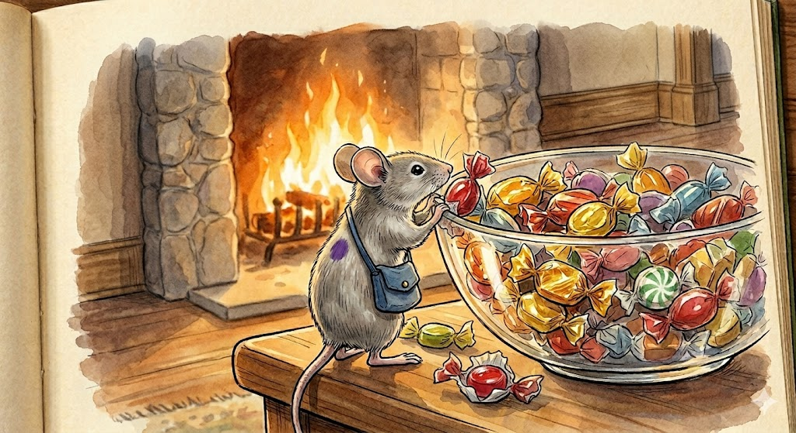
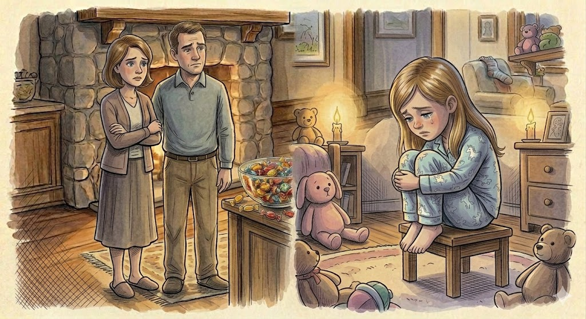
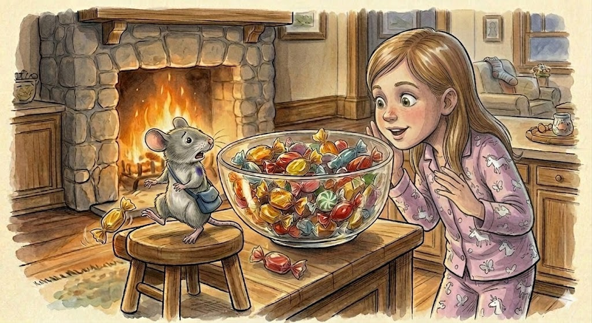
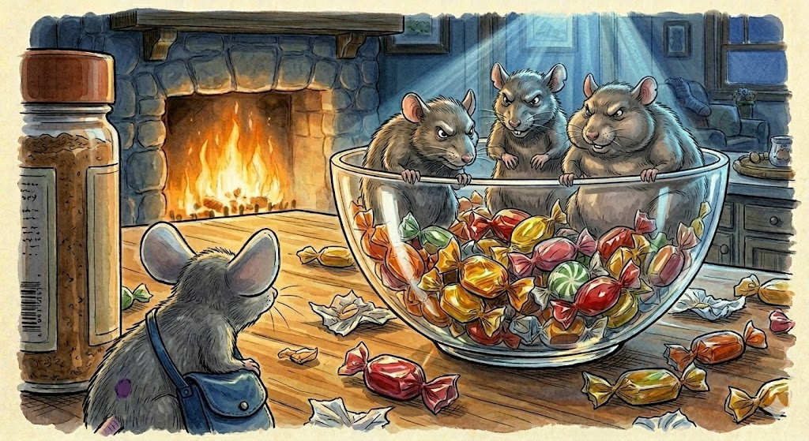
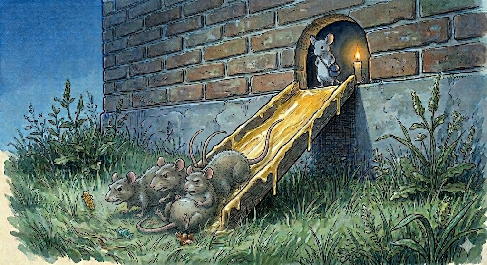
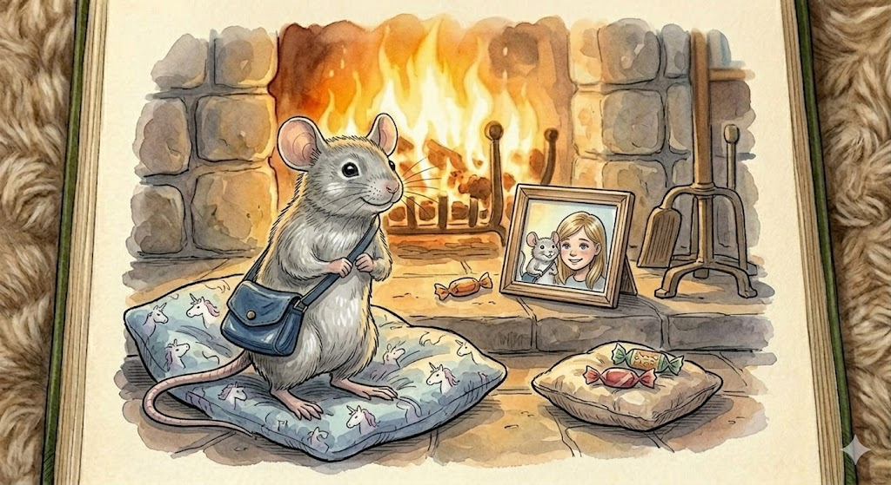

Once upon a time, in a cozy little house with a warm fireplace and a kitchen that always smelled of cinnamon and toast, lived a little girl named Lisa and her parents. They were a very happy family, but they didn't know they had a secret guest living right inside their walls.
In a small, hidden corner behind the baseboards lived a mouse. He was very small—so small he could hide behind a coffee mug—but he was very special. He had soft field-mouse-brown fur, large ears, and one single, bright purple spot right in the middle of his back. His name was Guluth.
One night, while the moon was high and the house was silent, Guluth felt a rumbly in his tumbly. He tip-toed out on his tiny paws—pitter-patter, pitter-patter—until he reached the kitchen counter. There, right in the center, sat a glass bowl filled with colorful, crinkly candies.
Num, num, num. He nibbled on a cherry drop. Crinkle, crinkle. He tucked into a peppermint. It was the most delicious thing he had ever tasted! After his belly was full, he scampered back into the safety of the walls and fell fast asleep.

The next morning, Lisa's parents walked into the kitchen. They looked at the candy bowl and saw wrappers scattered everywhere!
"Lisa!" they called out. "Did you eat the candy in the middle of the night?"
"No, no, I didn't eat it!" Lisa said. But her parents didn't believe her. They thought she was telling a fib. "Lisa, since you ate the candy without asking, you must go to your room," they said sadly.
Lisa went to her room, feeling very blue because she knew she hadn't done it.

Dad's Question
How do you think Lisa felt being in trouble for something a little mouse did?
That night, Lisa couldn't sleep. She sat up in bed and thought, I think someone else is eating that candy. She crept into the kitchen and hid behind the big armchair. Sure enough, out came the little mouse!
"Hey, Mouse!" Lisa whispered.
Guluth jumped so high his little tail nearly twisted! He turned to run back to his hole, but Lisa said, "Wait! Stop! Don't be scared."
She walked over and looked at him. "Why are you taking our candy?"
Guluth looked down at his paws, standing very still. "I'm sorry," he squeaked softly. "I thought the candy was for anyone. I will put it all back, I promise! I'll even find you more."
"You have to tell my parents," Lisa said. "They think I'm the one eating it."
"I will," Guluth promised. He looked her in the eye with a quiet, steady strength. "When they wake up, I'll tell them the truth. I don't want you to be blamed for something I did."

The next morning, Lisa woke up extra early. When her parents walked into the kitchen, she said, "Mom, Dad, don't be scared, but there's a mouse here! And he's my friend."
Guluth stepped out from behind a toaster. He didn't brag, and he didn't try to hide. He stood calmly. "It was me," he told them. "I ate the candy. I am so very sorry. I didn't want Lisa to get in trouble for my mistake. I am willing to work and help around the house to make up for it."
The parents were so impressed by the little mouse's honesty and his quiet strength. "Well, thank you, Guluth," they said. "A friend of Lisa's is a friend of ours."
As the weeks went on, things began to change. Guluth didn't just live in the house; he became part of the family. He would sit on the arm of the sofa while they read stories, and some nights, he would even curl up at the foot of Lisa's bed, a tiny, loyal guardian keeping watch.
But one night, Guluth heard a strange noise. Scratch. Scritch. Scrape.
He looked at the counter and saw three big, mean-looking rats standing right in the candy bowl! There was Eddie, who looked very smart; Betty, who looked very fast; and Letty, who was the biggest rat Guluth had ever seen.
"Hey, Rats!" Guluth called out. His voice was small, but it didn't shake. "This is not your house. You shouldn't take the candy from this family!"
The rats just laughed. "Haha! Like a tiny mouse like you is going to stop us?"

Guluth walked away, but he wasn't giving up. He was a very clever mouse. He went back to the rats and said, "I'm sorry I was so harsh. I know you want candy. I actually have a secret stash of even better candy inside my wall hole. But it's my private stash—you definitely can't have that!"
The rats' eyes turned greedy. "Who's going to stop us?" they sneered.
They scrambled toward the hole in the wall, thinking they were going to steal a treasure. But Guluth had been very busy. He had laid out a thick layer of slippery butter all inside the entry to the hole and down the long, steep slide he had built leading outside.
As soon as the rats stepped in, their feet went out from under them! Whoosh!
Eddie, Betty, and Letty went flying down the buttery slide, out through the gap in the wall, and tumbled right into the garden! They tried to scramble back up, but the butter was so thick and the slide was so slick that they just kept sliding back down into the grass. They couldn't climb back in!
"You've fallen for my trap," Guluth said calmly from the opening. "Goodbye."

Lisa's parents were so proud of their brave little protector. They decided that a mouse as special as Guluth shouldn't have to sleep in a hole in the wall or just on the edge of a bed. They built him a tiny, beautiful bed made of a soft woolen sock and placed it right next to the warm glow of the fireplace.
He was a protector, a friend, and a true member of the family. He closed his eyes, content, and the smallest smile touched his humble face.
"I am Guluth," he whispered to the quiet room. "And I am the mouse of this house. Now and forever."

The End.